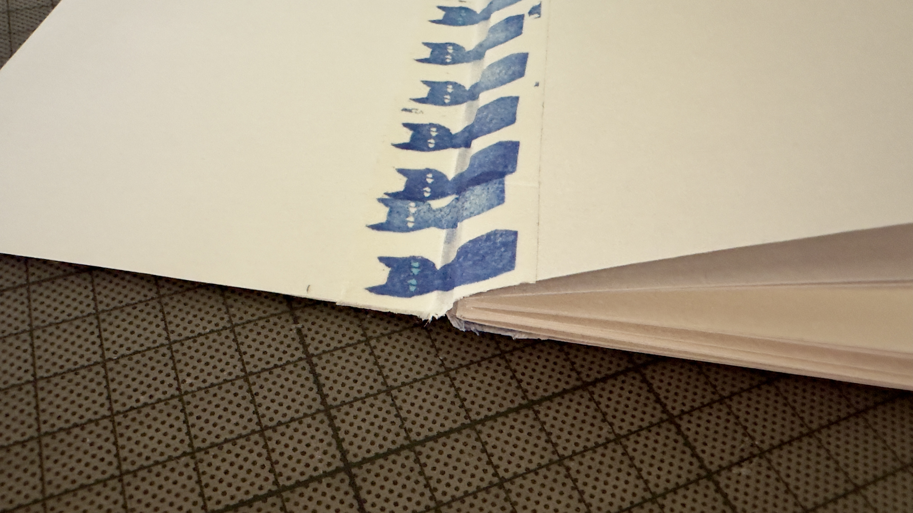
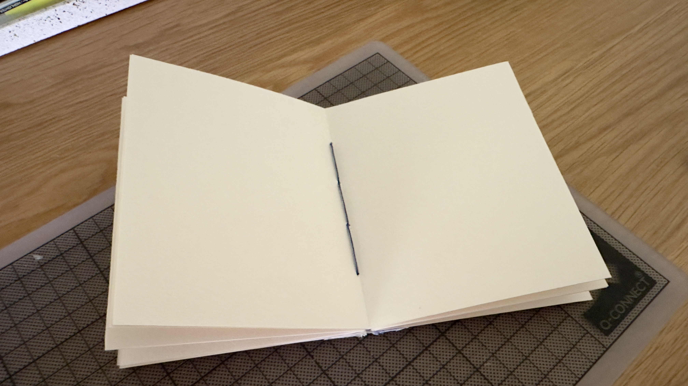
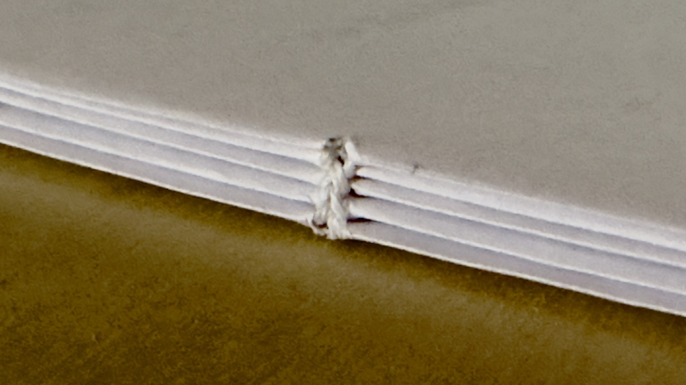
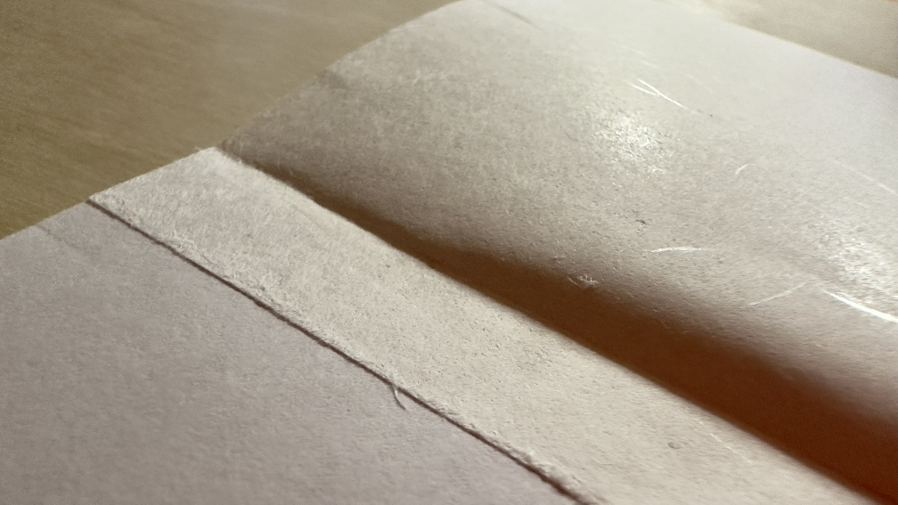
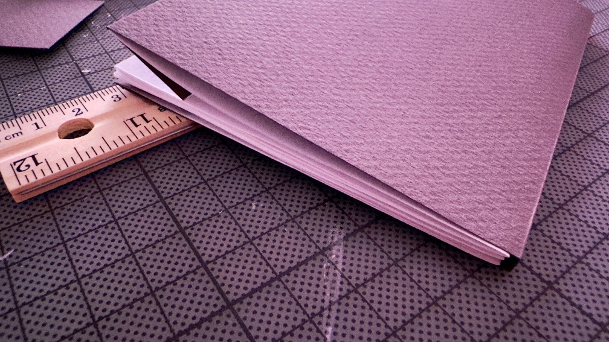

<meta charset="UTF-8">
<meta name="viewport" content="width=device-width, initial-scale=1">
<link rel="stylesheet" href="base.css?2022-10-29-5">
<title>Bookmaking</title>
<main>
  <h1>Bookmaking</h1>
  <h3>Practice</h3>
  <figure>
      
      <figcaption>Washi tape spine and recycled cover</figcaption>
  </figure>
  <figure>
      
      <figcaption>Washi tape attaching cover to light gray endpapers</figcaption>
  </figure>
  <figure>
      
      <figcaption>White watercolor paper book laying open exposing blue waxed thread</figcaption>
  </figure>
  <figure>
      
      <figcaption>Copier paper signatures sewn together with white thread</figcaption>
  </figure>
  <figure>
      
      <figcaption>Copier paper with textured endpaper glued on</figcaption>
  </figure>
  <figure>
      
      <figcaption>Completed small booklet with rough gray watercolor paper cover</figcaption>
  </figure>
  </tbody></table>
  <h2>Resources</h2>
  <ul>
    <li><a href="https://www.paperiaarre.com/blog/7-tips-professional-looking-handmade-books">7 tips for more professional looking handmade books</a></li>
    <li><a href="https://howdidyoumakethis.com/codex-book-binding/">Make This: Codex Book Binding</a></li>
    <li><a href="https://lilbookbinder.wordpress.com/2011/01/27/paste-paper-tutorial/">Paste Paper Tutorial</a></li>
    <li><a href="https://discoverandshare.org/2017/12/04/bookbinding-curiosities-paste-papers/">From the Library: Bookbinding Curiosities—Paste Papers</a></li>
    <li><a href="https://byopiapress.wordpress.com/2017/06/11/how-to-make-cooked-wheat-starch-paste/">How to make cooked wheat starch paste</a></li>
  </ul>
  <footer><a href="/">← Home</a></footer>
</main>
